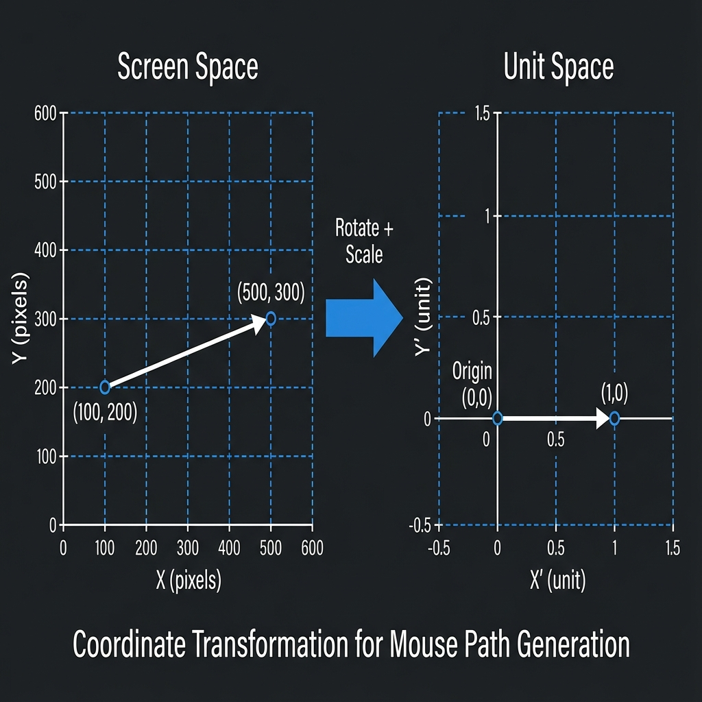
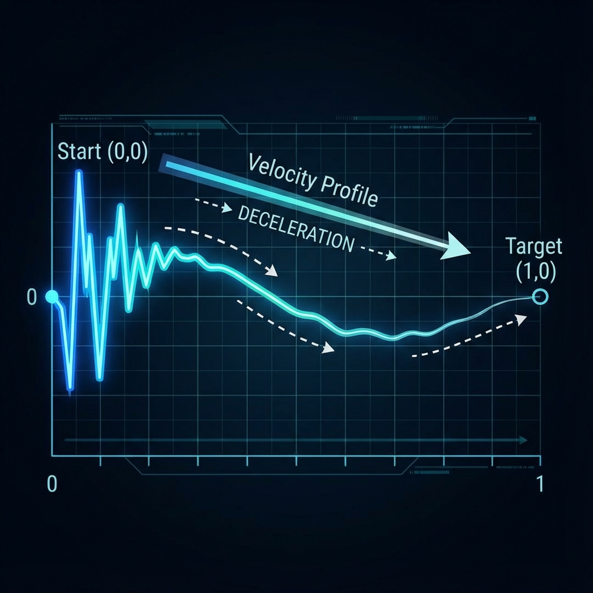
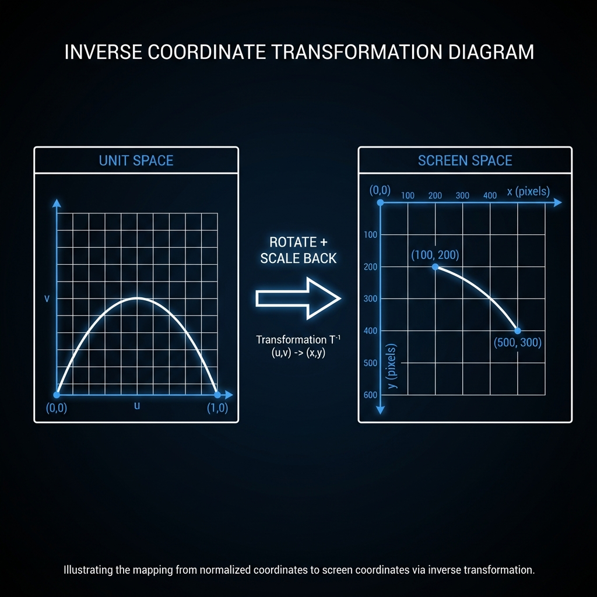

Path Generation Algorithm¶
This document explains how the PDPathGenerator creates human-like mouse paths using a PD (Proportional-Derivative) controller approach.
Overview¶
The generator simulates how a human moves a mouse cursor from point A to point B. Rather than moving in a perfect straight line, humans exhibit:
- Initial direction error - We don't aim perfectly at the start
- Curved trajectories - Natural arc toward the target
- Velocity profiles - Fast in the middle, slow near the target (Fitts's Law)
- Micro-corrections - Small adjustments along the way
- Hand tremor - Slight noise/wobble in movement
- Overshoot - Sometimes going past the target and correcting
The Unit-Frame Approach¶
Instead of working directly in screen coordinates, we transform the problem into a normalized "unit frame":
Screen Space Unit Space
target (500, 300)
● start target
/ ●------------●
/ (0, 0) (1, 0)
/
●
start (100, 200)
Deep Dive: The Math Behind get_unit_transform
The get_unit_transform function is the mathematical foundation of the coordinate system. Its goal is to take a movement happening at any angle or distance and translate it into a standardized "unit frame" where the start is always \((0,0)\) and the target is always \((1,0)\).
Here is a step-by-step breakdown of how the code achieves this:
1. Coordinate Unpacking¶
The function receives two numpy arrays as input:
start: The mouse's current position in screen pixels, e.g.,np.array([100, 200])target: Where the mouse needs to go, e.g.,np.array([500, 300])
It unpacks these into individual \(x\) and \(y\) variables: Start \((sx, sy)\) and Target \((tx, ty)\).
2. Finding the Displacement Vector¶
It calculates the displacement vector \(\vec{v}\) by subtracting the start from the target.
This vector represents the raw direction and distance the mouse needs to travel in screen pixels.
3. Calculating the Euclidean Distance (\(D\))¶
np.hypot calculates the magnitude (length) of vector \(\vec{v}\) using the Pythagorean theorem:
The or 1.0 is a safety mechanism to prevent "division by zero" errors if the start and target points are identical.
This distance \(D\) becomes the scaling factor used later to shrink the path down to a unit length of \(1.0\).
4. Vector Normalization¶
By dividing the displacement vector by its own distance, the function creates a unit vector (a vector with a length of exactly \(1.0\)).
In trigonometry, the \(x\) and \(y\) components of a unit vector are equivalent to the \(\cos(\theta)\) and \(\sin(\theta)\) of the angle of that vector:
The variables c and s now store these trigonometric values for the rotation matrix.
5. Constructing the Rotation Matrix (\(R\))¶
The function builds a \(2 \times 2\) rotation matrix:
This specific configuration is designed to rotate the entire coordinate system by \(-\theta\).
When applied to any point, it "un-rotates" the world so that the target point, regardless of where it was originally, now sits perfectly on the positive X-axis relative to the start point.
Summary of the Output¶
The function returns two pieces of data that allow the PDPathGenerator to work in a simplified environment:
| Output | Purpose |
|---|---|
| \(R\) (Rotation) | Tells the generator how to align the world so the target is "straight ahead" |
| \(D\) (Distance) | Tells the generator how much to scale the movement so the target is exactly "one unit" away |
Conversion Formulas¶
Screen → Unit:
Unit → Screen:
Why? This makes the algorithm resolution-independent. All the physics and tuning works the same whether you're moving 50 pixels or 500 pixels.
The process:
Step 1: Normalize
Rotate and scale the coordinate system so that start→target becomes a simple horizontal line from (0,0) to (1,0).
This transforms any diagonal movement into a standardized problem where we only need to move "right" along the X-axis.

Step 2: Simulate
Run the path simulation in this simplified unit space. The controller only needs to:
- Move forward (increase X from 0 toward 1)
- Correct Y deviations back toward 0
- Apply human-like noise and velocity profiles

Step 3: Transform Back
Apply the inverse rotation and scaling to transform the simulated path back to screen coordinates.
The curved path in unit space becomes a curved path between your actual start and target points.

Transformation Pipeline¶
The physics simulation loop logically applies these transformations in order during every iteration:
flowchart LR
A[Velocity] --> B[Feedforward] --> C[PD] --> D[Noise] --> E[Stabilize] --> F[Limit] --> G[Integrate] --> H{Keep?}
H -->|Y| I[Path]
H -->|N| J[Skip]Select a step below to see its implementation:
Feedforward + Braking
Implementation: Inlined physics calculation
Maintains forward motion with Fitts's Law deceleration. Humans naturally slow down as they approach a target.
dist_rem = 1.0 - progress
brake = clip(dist_rem * 4.0, 0.15, 1.0)
v_unit = direction * (mouse_velocity * brake)
| Progress | Brake Factor |
|---|---|
| 0-75% | 1.0 (full speed) |
| 85% | 0.6 (slowing) |
| 95% | 0.2 (crawling) |
PD Correction
Implementation: Inlined physics calculation
Steers toward target using proportional-integral control with adaptive gain.
# Blended KP based on progress
current_kp = weight_far * kp_start + weight_near * kp_end
# Error toward target (and arc)
err_x = 1.0 - P_unit[0]
err_y = ideal_y - P_unit[1]
# Apply correction
v_unit += current_kp * 20.0 * err_unit + ki * err_sum
Arc Trajectory: When arc_strength > 0, the path follows a sine curve for natural curvature.
Noise (Ornstein-Uhlenbeck)
Implementation: Inlined physics calculation
Smooth, correlated random perturbations simulating hand tremor.
theta = 0.15 # Mean reversion rate
sigma = noise_strength * 0.002
# Noise decays near target
noise_factor = (1.0 - progress) ** 1.3
# Update: pull toward zero + random kick
noise_state += (-theta * noise_state) + (sigma * random)
v_unit += noise_state * noise_factor
The noise automatically fades near the target to ensure accurate arrival.
Stabilization
Implementation: Inlined physics calculation
Damping and smoothing for natural, flowing motion.
Step Limiting
Implementation: Inlined physics calculation
Prevents unrealistic jumps and backward motion.
Integration
Implementation: Inlined physics calculation
Euler integration to update position based on velocity.
Point Density
Implementation: Inlined physics calculation
Controls how many points are kept. Sparser at start, denser at end.
# Interpolate probability
keep_prob = keep_prob_start + (keep_prob_end - keep_prob_start) * progress
# Always keep points near end
return random() < keep_prob or progress >= 0.97
| Phase | Keep Probability |
|---|---|
| Start (fast) | ~70% |
| End (slow) | ~98% |
Post-processing (applied after simulation):
flowchart LR
A[Raw Path] --> B[Rotate/Scale to Target]
B --> C[Add Overshoot]
C --> D[Final Path]Post-Processing¶
After the simulation loop completes, two final transforms are applied:
Rotation/Scale Transform¶
The path is rotated and scaled to ensure it exactly hits the target endpoint. This compensates for any accumulated numerical error during simulation.
Overshoot¶
Method:
_apply_overshoot
When triggered (based on overshoot_prob):
- Overshoot phase: Continue past target in the movement direction (3-8% of path distance)
- Recovery phase: Curve back toward the target with eased motion
Parameter Reference¶
| Parameter | Range | Description |
|---|---|---|
mouse_velocity |
0.1 - 1.0 | Base velocity in unit space |
kp_start |
0.0 - 0.1 | Correction strength at path start |
kp_end |
0.0 - 0.1 | Correction strength near target |
stabilization |
0.0 - 1.0 | Smoothing/damping factor |
noise |
0.0 - 1.0 | Hand tremor intensity |
arc_strength |
0.0 - 0.5 | Curvature of arc trajectory |
arc_sign |
-1 or +1 | Direction of arc (up/down in unit space) |
keep_prob_start |
0.0 - 1.0 | Point density at start |
keep_prob_end |
0.0 - 1.0 | Point density at end |
variance |
0.0 - 0.5 | Random variation in all parameters |
overshoot_prob |
0.0 - 1.0 | Chance of overshooting target |
offset_x / y |
Any | Global offset added to output coordinates |
canvas_width / h |
Pixels | Used for scaling variance relative to screen size |
For detailed presets and tuning examples, see Tuning Parameters.